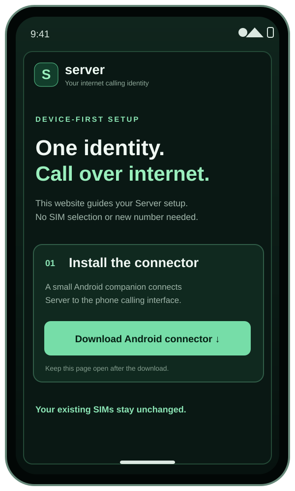
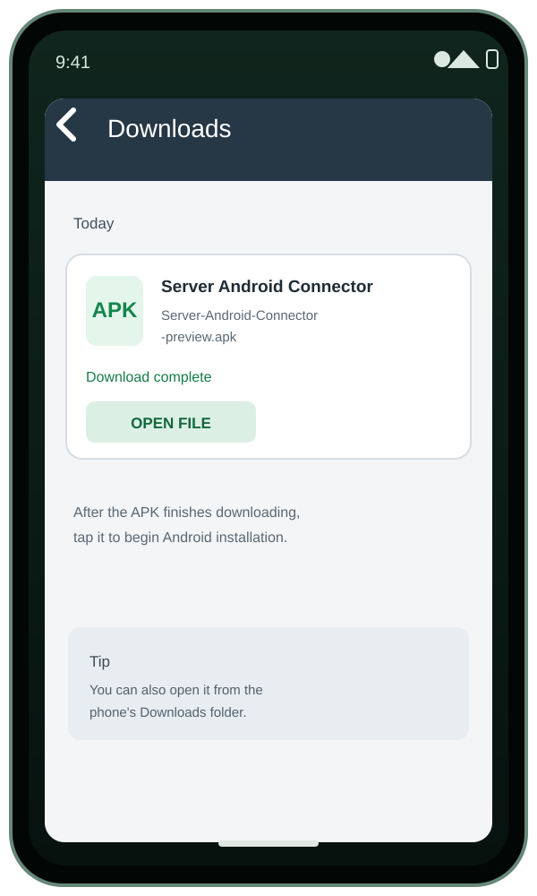
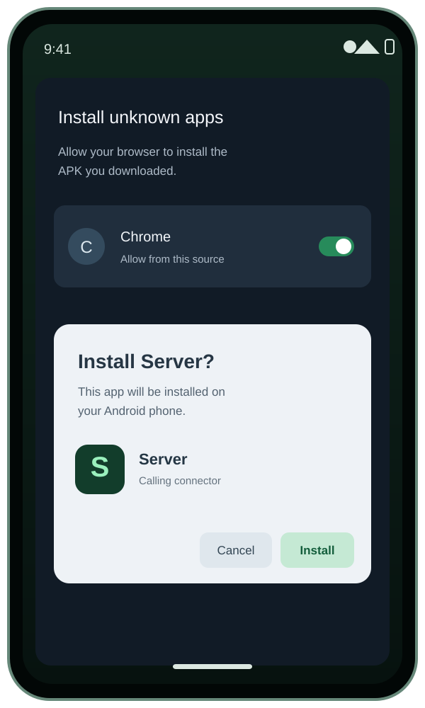
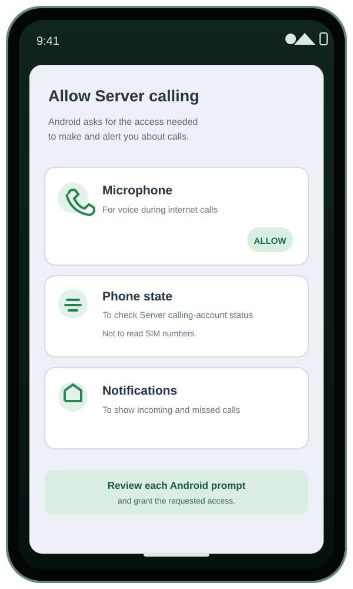
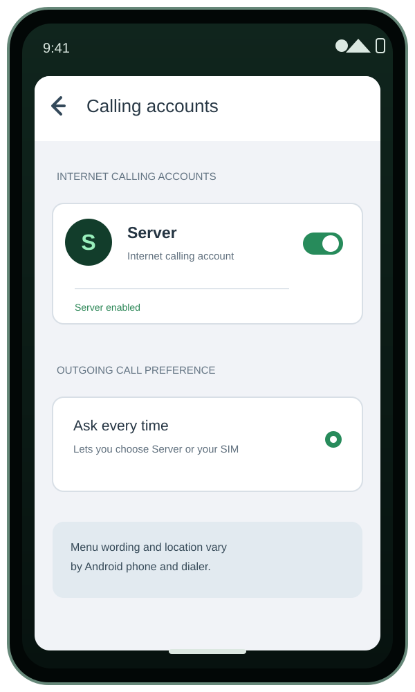
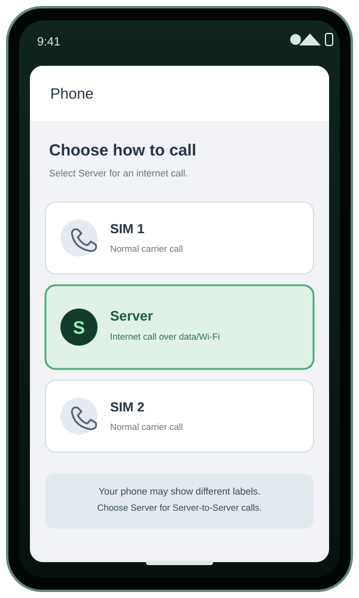

STEP 01
Open the Server website
The website is the starting point. Keep it open while you install the Android connector.
Every call starts in Server and uses the internet. A Server member with a fresh connection is reached through the Server receiver. A non-member is reached through a secure, caller-identified browser invitation: once that number has enrolled a browser call receiver, Server can send a Web Push alert over Wi-Fi or mobile data, and the recipient answers through WebRTC without installing Server. For first contact, the invitation must be shared once so the recipient can enable browser call alerts. Server does not switch an unanswered internet call to a mobile operator.
Install the single Server app for Android calling. This same APK can also receive calls and enable offline wake-up when someone sends you a Receiver invitation. Your Server identity and internet calls do not depend on your SIM, phone number, or mobile operator.
No SIM selection or SMS permission is needed. Guest invitations use free internet notifications for browsers that have enrolled with Server. For first contact, share the secure link through WhatsApp or another internet messaging app. Guest invitations never use carrier SMS or deduct airtime.
This is an Android ARM64 preview build distributed directly for testing, not a Play Store release. Android may ask you to approve installing apps from this source.
After installation, open Server from this page. No SIM setup or extra gateway app is required.
iPhone uses a separate native Server app and Apple's calling-app permissions. The Android APK above cannot be installed on iPhone; the iOS setup will be released separately.
Every call is registered in Server. Server members and enrolled non-member browser receivers are reached over the internet. Non-members answer through a secure browser link and WebRTC; they do not need a Server account or app. If no receiver is reachable, Server reports the call as unreachable instead of switching to a carrier network.
Allow microphone access for call audio and notifications for incoming calls. Contacts access, if granted, is used only on this phone to match caller numbers against names already saved in your address book; contacts are never uploaded. Server does not need a selected SIM to place an internet call.
This is the caller name shown in Server guest-call previews, browser alerts and call screens. Use the name you want recipients to recognise. It is your Server profile name, not a phonebook lookup or an independently verified Truecaller identity.
Your Server ID is ready. Server calls use WebRTC over the internet. When you call a non-member, Server sends a caller-identified browser push alert if that phone number has previously enrolled a guest receiver. On first contact, share the secure invitation once; the recipient can enable call alerts in their browser and answer without installing Server. If no internet receiver is available, Server records the attempt as unreachable—no mobile-operator fallback is placed.
Choose people from your phone contacts. Each person gets their own private setup link. They open it once and enable call alerts; you can see who has connected here.
Your contact names and address book stay on this phone. Server receives only the phone numbers you explicitly invite.
Your Receiver list is saved to your Server account.
Your invited people will appear here.
When a recipient has enabled Server guest-call alerts in their browser, Free internet notifications are sent to enrolled guest browsers over Wi-Fi or mobile data. For first contact, share the unique secure invitation link through WhatsApp or another internet messaging app. Server does not use carrier SMS for guest invitations, so this feature never deducts airtime or requires a paid SMS gateway. Opening the link and answering still requires the recipient's internet connection.
Server calls and guest invitations use mobile data or Wi-Fi. Enrolled guest browsers receive free internet notifications; first-contact links can be shared through an internet messaging app. Guest invitations never use carrier SMS. Server never silently switches an internet call to a cellular voice call or changes your cellular SIM.
Server is an Android internet-calling account, not a second cellular SIM. Android dialers differ, so the exact placement of Server in the system's call choices depends on the phone and dialer version.
SETUP, STEP BY STEP
Follow the illustrated Android setup journey. Android wording and screen layouts vary by phone brand and version.

The website is the starting point. Keep it open while you install the Android connector.

Tap Download Android connector. When the file finishes, open it from Chrome Downloads.

Approve Android's install prompt. Android may first ask Chrome or Files to allow installation from this source.

Accept the terms, then allow microphone access for call audio and notifications for incoming-call alerts. Contacts access is optional and is used only on this phone to match numbers against names already saved in your address book; contacts are never uploaded. Server does not ask you to select a SIM or grant SMS-send permission.

Turn on Server in Android Calling accounts. Choose Server in the Phone app when you want an internet call. If Server cannot reach the recipient, it reports the attempt as unreachable; it does not hand the call to a SIM.

Use the normal Phone app's call choices and select Server for an internet call. Carrier SIM choices remain available for normal cellular calls.
About these pictures: They are explanatory illustrations, not screenshots from every Android phone. Exact prompts and call-choice layouts vary by device. Server calls use WebRTC over mobile data or Wi-Fi. Non-members can answer from a secure browser invitation after enabling call alerts; no Server app or account is required on their phone. Server never converts a failed internet call into a carrier call.